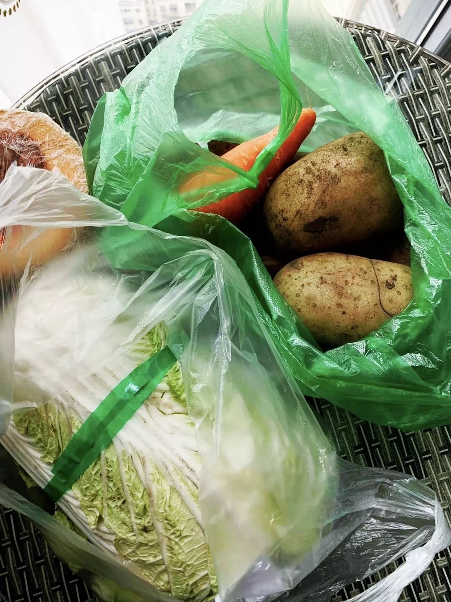
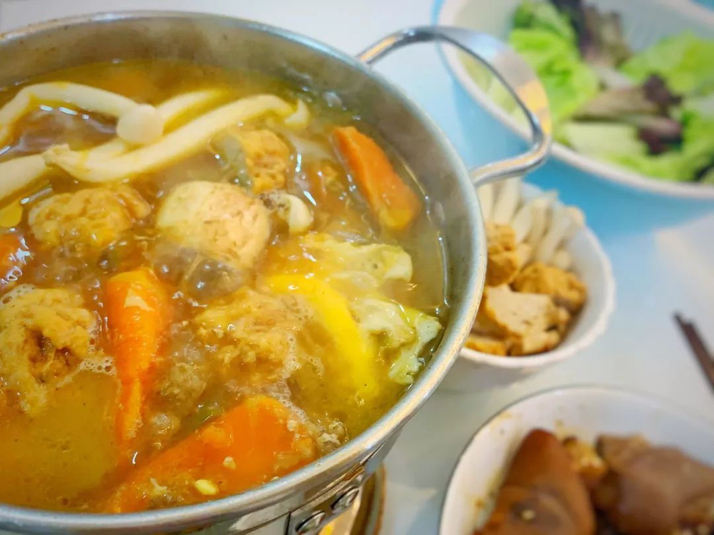
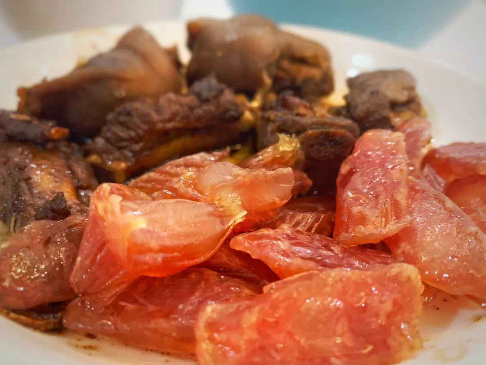
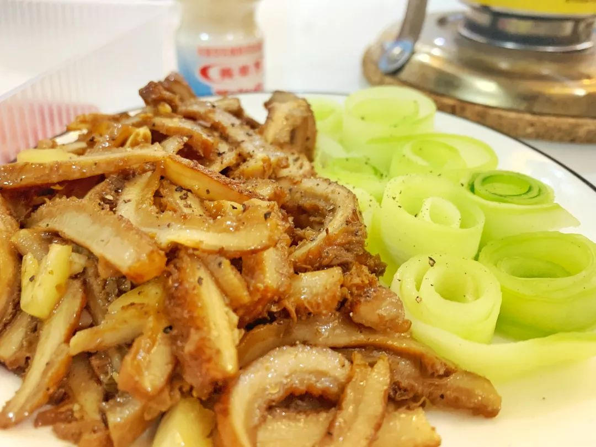
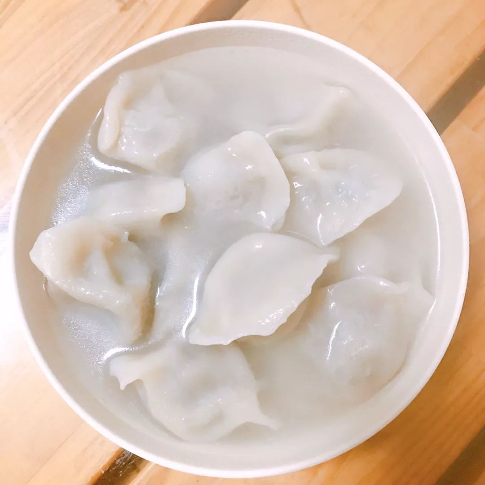
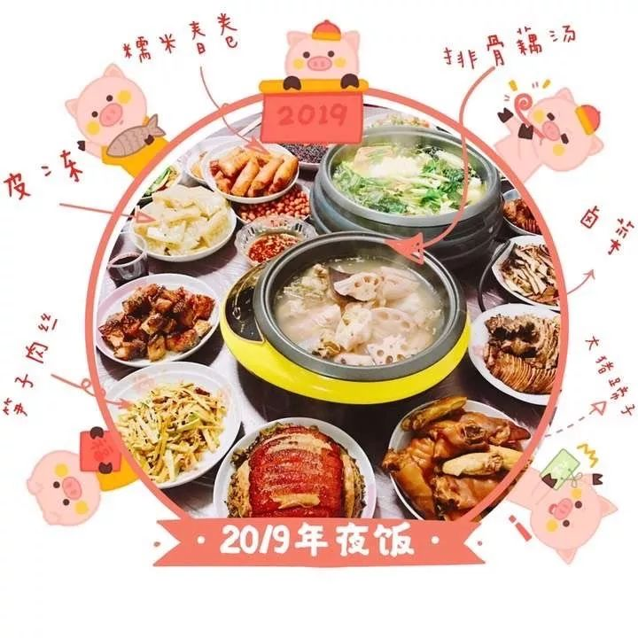
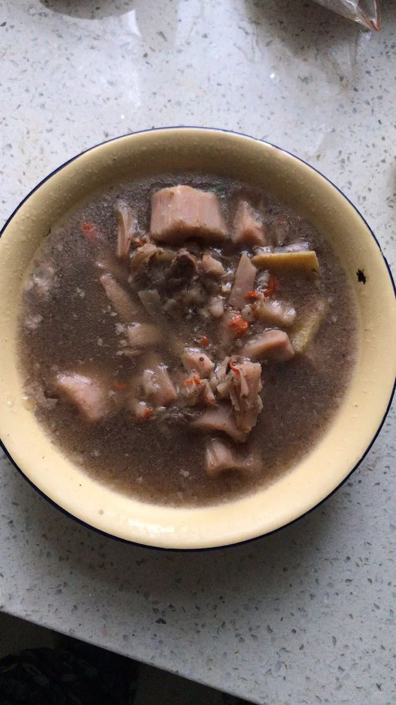
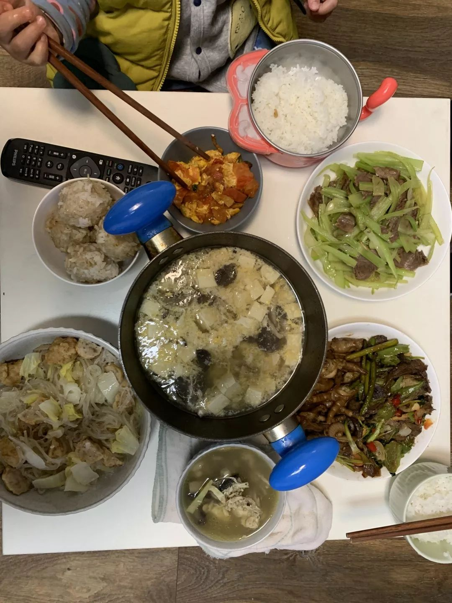

在人间丨武汉年夜饭
原文链接 备份链接 本视频为今年的年三十，武汉父母与身在外地的孩子 隔空互送新年祝福 年夜饭，是中国人最看重的家庭宴会。1月24日，武汉封城第二天，年三十，有23个武汉人给我们分享了他们的年夜饭。 @王启明： 今天是武汉封城的第二天，也是 …


你怀着怎样的心情，度过了2020年的大年夜？
在得知武汉封城的新闻后，三明治紧急发起了每日书特别版《武汉日常》，邀请人在武汉和家乡在武汉的朋友，一起来用文字忠实记录他们在这个特殊时期的生活日常。
招募一经发出，就有近百位朋友迅速响应，其中有一路哭着坚持回家过年的北漂，有跟妈妈去武汉探亲的高三女生，有一直听见窗外救护车声的母亲，有在美国关心着疫情的武汉媳妇，有参与建设应急医院的朋友……这其中已有50位，开始在每日书中记录他们的“武汉日常”。
接下来，我们将争取每天摘录一部分他们的每日书，作为大疫情之下的真实片段，为时代留下一点普通人的痕迹。
今天是第二篇，我们选取了7个记录了2020年这个不寻常的武汉除夕夜的生活切片。
**01
**
沾着泥巴的大白菜
放在刚用酒精消过毒的厨房台面上
作者：安格
坐标：武汉
职业：自由职业者
今天是封城的第二天，也是除夕。
早上起来打开手机，就弹出“湖北省多处封锁”和“武汉市25凌晨起封闭过江隧道”的消息。大家都以为封锁后是解封，没有想到封锁后面对的是更小范围的封锁。但和昨天比起来，心情已经平静了许多。囤够了粮食，家里有网有水电，人不过吃喝拉撒，能够满足基本即可。


图片来源：北京青年报
昨天阿欢给父母打去3个电话才终于取消了年夜饭，但阿欢的爸爸还是执意要从另一个区开40分钟的车过来给我们送粮食。
阿欢的爸爸是军人出身，说话走路都雷厉风行，阿欢是他唯一的宝贝儿子，他想要为我们做点什么，是万万不可以拒绝的。但我和阿欢说好，因为我们俩处于疫区，之前接触的人多且杂，在没有隔离足够久的情况下，最好不要和长辈久待。
阿欢的爸爸把车停到楼下，我们全副武装戴好口罩下去领“空投“的粮食。原本以为我们自己拿了就上楼，阿欢爸爸却执意要跟我们一起上去。“我不上去，你们哪知道什么放哪里！”他说着就往电梯里走，我把鼻子上的口罩封条又捏紧了些，跟在他后面上了电梯。
那些所谓的“我不知道”放在哪里的粮食包括一整袋的苹果、橙子和猕猴桃、一整壶油、两袋泡面、一整袋米、大概有十个大白馒头、两筒面条、一大袋冷冻的炸肉丸、一整颗带着泥巴的巨大白菜、4个依旧是带着泥巴的大土豆、数根胡萝卜……不知道为什么，还有几乎没有在他们家常菜中出现过的西芹和荷兰豆。
“你们肯定什么都没有，这些东西够吃半个月了，饿不着了。”欢爸看着我们把东西乖乖接过收好，不禁喜笑颜开。
我本身没有洁癖，但沾着泥巴的大白菜土豆放在我刚用酒精消过毒的厨房台面上，心里还是忍不住哆嗦了一下。除此之外，还有一大块，新鲜肥腻的五花肉。
自从肺炎闹的沸沸扬扬之后，我情绪上十分抵触生鲜肉类，最近囤的货物也是以冻肉为主。关于宿主和传播源的说法众说纷纭，谁知道什么时候又突然把矛头指向哪种动物呢。我捏着这块肥弹的五花肉，迅速地把它塞进了冻柜，心里暗自祈祷低温可以杀死细菌。
我本来也有囤食物的习惯，在封城的前一天，我已经习惯性地囤了一批食物。加上欢爸送来的吃的，至少够我和阿欢吃上3个月。
“你在家里也戴口罩啊？”当我正局促不安地站在厨房的角落，看着阿欢和他爸爸都没有戴口罩还交谈甚欢时，阿欢的爸爸冷不丁问我。
“啊，我是怕传染你们，因为我有朋友，已经发烧了。”我只能照实说了。当时执意要取消年饭，也是因为这个原因。欢爸略微的点了下头，表示理解，但随即又拍着心脏说，“我不会有事的，我这里不好，肯定不会再得别的病了。”我努力咽下“这次的死者都是有相关病症的老年人”这句话，默默地点了点头。
晚上的年夜饭只有我和阿欢两个人，准备的食物也很简单：中午剩下的四块排骨和两块猪蹄，切了一根腊肠蒸放在旁边蒸熟了就是一盘蒸菜；中午剩下的胡萝卜牛肉丢进小火锅里涮菜吃，洗点蔬菜就是一个火锅；中午剩下的凉拌牛肚，加上前几天做的粉蒸肉，虽然比不过往年满满当当十几个菜，也是不差了。
只有我和阿欢两个人，吃的还都是中午的剩菜，我怕他觉得有落差，特意把菜用好看的碟子装了起来。





饭做得差不多了，我们还一起贴了春联，就算只有两个人，爸妈也不在身边，该有的流程也一个都不能少。
吃着饭，早早地就把电视调到了中央台等待春晚，我和阿欢碰杯，喝用好看的高脚镂花玻璃杯装着的桂花米酒。“新年快乐，新的一年一切顺利！”我们碰杯时我说，希望这一切快点结束。

电视里的春晚依旧热闹非凡，看到朋友圈里有人发“春晚现场怎么没人戴口罩？” 只能苦笑了一下。前半段我还津津有味地看着，但随着收到的消息越来越多，心情就越来越低落。电视里的热闹反而让人觉得更加空虚。
“我们可能会被困在一起很久呢。”我对阿欢说，突然很想大哭一场。
**02
**
大年三十，我和爸爸解开了心结
作者：小满
坐标：武汉徐东
职业：新媒体
“快，把灯都打开，今天过年！”
“好！”
开灯的时候，看到夜色中的武汉，比白天暖。因为看到一家家的灯都亮着，瞬间就特别心安。
从没想过今年会在武汉过年，也从没想到“封城”，会解开多年的心结。

实际上，不知道从何时起，和爸爸之间的关系变得特别紧张，就是一两句话的功夫，会瞬间爆炸，一直都无解。
1月初有一次去超市买电热毯，因为是去人流密集的公共场合，外加天气很冷，刚吃完饭，我就劝我爸把口罩戴上。当我把新拆封的口罩递给他时候，他一脸傲娇地走出门去，“我不戴”。我说：“拆都拆了你为啥不戴？”他说：“不用戴，戴着闷。”一番劝说之后，开始吼我：“你怎么非要强迫别人戴呢，我不习惯戴口罩。”我瞬间无语了，折起口罩放进荷包。怒气冲冲地走在前面，不和他说话了。没过一会，快走到超市，他又弱弱地说：“口罩呢，给我。”
今天我们又因为一个小问题起了争执。我习惯性地先走开了，然后晚上吃饺子的时候，看着电视上的新闻，一下子没绷住哭了出来，没沾着醋倒混着眼泪吃进去了。然后不知道是什么原因我鼓足了勇气，压制住了怒气，准备心平气和地好好沟通一下。因为实在不明白，为什么双方都是为对方好，却总是莫名其妙地产生矛盾。
老爸激动地在屋子里踱来踱去，咆哮着“控诉”这些年心中的委屈，“你们一点都不尊重我”“总说我碗洗得不干净”“就是不相信我”……
听到他说出心里那些之前没有说出来的话，瞬间明白了争吵背后他的想法。随即我妈点出重点，因为我们仨总为对方考虑更多，都是为对方好，可是有些想法没有说出来，对方也不明白你一些话语背后的考虑和关心。然后我提了小小的建议，希望他以后不要凶我，好好说话。他竟然搬出来说这是我们家祖传的暴脾气，改变不了，说他小时候看爷爷奶奶也是那样的。不过他还是表示会尽力改变。
今年的年饭虽然简单，可是赶在大年三十解开了心结，开心，似乎也没有昨天那么恐慌了，毕竟一家人在一起。
最后，拍了一张2020年简单的年饭——饺子。

速冻饺子被小姨鄙视了
要知道去年的年饭是这样的丰盛啊……


最最想念是去年年夜饭的节耳根。大家一定都要好好的，平平安安。武汉，一定要快快好起来！
**03
**
湖北人的餐桌，少不了“筒子骨藕汤”
作者：陈拯
坐标：武汉汉口
职业：国企员工
昨天起了床，盘算早餐及未来不知多少天的粮食储备，想到楼下的蔬菜便利店价高且质次，决定冒险去一趟菜市场采购。
媳妇千叮咛万嘱咐，务必戴好口罩，务必不要过多逗留，务必回来好好洗手，就这么出发了。沿路与平常无异，略感觉人烟稀少，菜市场附近还是领着大袋小包食材的人们，方知农贸系统还在运转。一家家摊贩看过去，价格比寻常略高一点，处于可以接受的范畴，考虑到存储与饮食习惯，买了粉藕、泥鳅，带壳豌豆、菜薹、泥蒿、番茄、筒子骨……花费二百余元。
还顺道去了附近药店，一进门，营业员主动说，口罩没有、体温计没有、莲子心没有。归途中，准备到第二家药店试试运气，一看排队的人已经站在门外了，依照服饰辨认，中老年居多，评测了一下风险就放弃了，回家。
今天是大年三十，政府四号令出台，12点起网约出租车暂停运营，出租车按照单双号限行。心里一沉，明白政策的出台是为了阻止病毒传播和流行，却深深感到无力感。起床，早饭做了手抓饼和小汤圆，然后开始准备午餐。

我们准备做传统的湖北菜，“筒子骨藕汤”，汤是细长的蔡甸野藕，从老光顾的摊主那里选购而来，筒子骨已经切成块，锅里烧热水把骨头洗净除去血沫，煮出来的汤无杂质。藕还站着泥巴，洗净、刨皮，切成小块，洒上盐粒腌制片刻入味。请出了紫砂锅，选定长达三个小时的炖肉模式，倒入水和骨头，在倒计时一个小时再加入藕块。
在这个特殊时期，又加入了枸杞和党参，增强营养，提高免疫力。到了时候，汤煮成，藕糯粉，汤清亮，有回甘，午餐配上才鱼片和清炒泥蒿，荤素搭配，不油不腻。

**04
**
一碗鸡汤，送去给姐姐做年夜饭
作者：水默
坐标：武汉
职业：老师
“我还是想把呱呱送到你那里去。”一早，接到我姐的电话。我还没完全醒，脑子里嗡的一声。
“你还是觉得不好吗？”
“嗯，从西安回来我就觉得不对劲，现在我和老公都有些低烧，浑身无力，没什么食欲，我还拉肚子了……我怕传染给娃。”
姐姐的声音带着些鼻音，她在极力克制自己的情绪。
“呱呱现在如何？”
“他还好，没什么症状。”
“给他量体温了吗？”
“还没。”
我默然无语。此刻我和老公还有两岁的娃在家里。家里三间房，呱呱过来，可以让他待在客卧里。可八岁的毛孩子，待得住吗？何况，见着哥哥，我们家跳跳那还不得猛扑过去，哪里拦得住。
家里没有任何消毒用品，酒精84一个也没买到，口罩还是老公单位发的，库存也不多。
我姐其实还有个选择，可以把呱呱送到我妈那里。那里更近。但是我妈说她之前有点感冒。我们家其实也有隐患，直到昨天，小马同志还在上班，也靠不住。我姐拿不定主意，所以问我的意见。
我有些犹豫。答应，我做不到，然而拒绝，我也做不到。我姐感觉到了我的犹豫，挂了电话。
我感觉很无力，又内疚又愤怒。看着在一旁看手机的老公就觉得气不打一处来。难道没听见我打电话吗？愿不愿意呱呱来，表个态啊！我姐病了，起码关心一下啊！一天到晚刷手机！我烦躁地甩开卧室的门。
后来我姐把呱呱送到我妈那里。
下午我再给我姐发消息她就不怎么回了。给她电话，她声音疲倦而烦躁，说要休息。
“你应该去医院。”
“看不了，都是人。排不上号。去了还会交叉感染。”
“那你也不能就这么躺着呀！吃药了吗？”
“有药。哎呀，你别管，我自己知道。”
我姐是医生，她肯定比我明白。
“吃的喝的备好了吗？”
“哪有时间准备，之前我在上班，廖要看娃。”
“那你们现在赶紧准备一点啊。”
“有挂面。吃面条就行了。”
啪，她又挂了电话。
我又气又恼，喉头堵得慌，觉得好委屈。偷偷地擦眼泪。
我在卫生间里找到了一瓶威露士的消毒水，以前买来给衣服消毒用的。这个应该也能管点用吧。赶紧兑了水，开始全面消毒，把家里搞得砰砰砰响，老公看出来我心情不好，勤快地赶来拖着地。
时间一点点过去，该准备年夜饭了。原本是我们一家和我姐一家一起去爸妈那里吃年饭的。现在取消了。姐姐和姐夫两人身体不舒服，年饭估计就只能呆在家里吃挂面了。看着家里准备烧的半只鸡，我突然想起来可以炖点汤给她们送去。
说干就干。汤就煨好了，咕嘟咕嘟冒着热气。家里竟没有保温桶，只能用一款长柄奶锅装了，小马同志二话没说拿了就开车给她们送去了。
小马同志最后七点半才到家，我们家终于在晚上八点吃上了年饭。送完鸡汤回来的路上小马同志还去妈妈家里拿了些肉过来，囤起来。我妈给我们准备了年饭，用小火锅装着，外面裹上保鲜膜让小马同志带着，我们可以直接热了就吃。也不多，就是五个圆子，一份鸡爪，一份牛肉炒蒜苗，一份海带丝，一份番茄鸡蛋，连米饭也一并准备妥当。
一桌年夜饭，有我做的菜，有妈妈做的，还有一小碗是送给姐姐的鸡汤剩下的。也算是一种团聚了吧。

后来得知姐姐、姐夫扛不住了，还是去了医院，拍了CT，姐夫已排除，我姐还在观察中。这算是今天最好的消息了吧。
**05
**
大年夜在单位值班，
发现食堂阿姨还没有戴口罩
作者：古古
坐标：武汉
职业：隧道运营管理
昨天是我的30岁生日，我所在的城市武汉因为新型冠状病毒封城了，交通系统全面停运。
打开手机，全部都是疫情爆发的信息，各类消息混杂在一起，我努力控制情绪想用理智在这众说纷纭的无数信息中辨别真相。和我合租的小伙伴前段时间伤风感冒，还在自我隔离观察期，我们自觉地躲在各自的房间里用手机分享彼此了解到的信息。
我们得出一致对结论：我们唯有管好自己，别的什么也做不了。
决定下楼去囤点菜，顺便看看外面的情况。穿戴好口罩，下楼看见楼下的垃圾桶里全装满了垃圾没有人清理，好几个人在楼洞口抽烟……不远处一个妈妈带着自己的两个人孩子在带着口罩打羽毛球……大家都不说话，气氛相当诡异。
菜市场却生意异常好，许多人拉着小车来囤菜，我看见不远的地方有个药店，心想先去药店碰碰运气看能不能去买到消毒药水、酒精、口罩什么的。店里还有七八个顾客也在询问口罩、还有人在囤板蓝根。问过店员没有酒精口罩了。我赶紧去菜场买菜，果然菜品没剩多少， 价格虽然不像网上谣传的贵的那么离谱，但也涨到了至少是平时的两倍，我跟大多数人一样把能买到的都买了一点。
回到家赶紧跟父母打电话，嘱咐他们一定不要串门也要拒绝来串门拜年的人，告诉他们我今年回不去了。
原本打算23号值完夜班第二天就坐火车回家，现在也只好退票。同时也收到单位通知，几名同事发热在家自行隔离观察或在武汉周边无法进城，单位已经严重缺人，需要临时调动到其他岗位执勤，值班制度也从一白班一夜班休两天，调整到24小时在岗，再休息三天。
这注定不是一个平凡的除夕。
早上收到长江隧道封路的消息，官方统计感染人数又涨了。今天的武汉一整天还在下着冰凉的雨，一点阳光也见不到。我们除了管好自己真的什么也做不了，只能默默祈祷。
大年夜，我和几个同事还在单位值班，发现食堂的阿姨都还没有戴口罩……但又不能不吃饭。一整天我都盯着手机看各种信息，越来越绝望，直到晚上才看到有部队医疗队赶来支援的好消息，小汤山医院也已经确认打好地基。有些医院也有物资送达。
毕竟是过年，我去群里抢了几个红包，又发了几个红包。跟家人视频报平安。也希望大家能平安。
**06
**
帮马路对面的姥姥家贴春联，
门被意外关上了……
作者：北北
坐标：湖北武汉
职业：学生
姥姥家和我家距离很近，仅隔一条马路，每天因为一些琐事往返也十分方便。
今天我和我妈去帮姥姥贴春联，这是每年的惯例。在我眼中，贴春联是非常简单的一件事，因为我小时候学过剪纸，剪剪贴贴是做惯了的事儿。以往贴春联这件小任务由我爸一人完成，但这次的难点在于“我和我妈”。
和我妈妈合作完成一件事情总是很困难的，我至今也没有摸索出什么窍门。譬如这次贴春联，我认为应该先裁剪好透明胶带，贴在春联边缘，再由贴者拿着，踩上凳子，一贴即可。但我妈坚持人站上凳子再完成上述动作，我不明白提升完成动作的高度究竟有何意义，但鉴于我妈把持住了胶带和剪刀，说理没有任何意义。
就差横批没贴了，这项工作已经接近了尾声。我妈坚持让我将对联贴在门牌号下方，我比划了一下，横批的宽度稍微超了一点，因此建议向右移动一下。这引发了母上的强烈不满，她大声呼唤姥姥出门来看一看。我看着姥姥满脸问号地走出门来，正当她把门转过来想看看时，“嗒哒”门关上了。“坏了”，姥姥惊呼，“我没带钥匙！”我妈有钥匙，但她说放包里了，而钥匙和手机都在包里。我绝望地发现我的手机也在屋里的茶几上。
姥姥住的是研究所的小区，邻居们也多是老人，过年加疫情让许多老人提前去儿女家过年，因此整个楼空荡荡的。所幸五楼的邻居恰好下楼吃饭，姥姥找邻居接了手机给舅舅打电话，让他赶快回来给我们送钥匙。舅舅从上班的地方开车赶回来大概需要十五分钟。
我们三人站在寒冷的门外。姥姥刚做完胃部切除手术，这次肺炎易感染人群又恰好是中老年人，我和妈妈都很紧张。但妈妈表现紧张的方式是指责姥姥怎么顺手关门，姥姥质问妈妈为什么非要自己出来看一眼。我发现羽绒服的帽子是可拆卸的，便让妈妈拆下来，给姥姥戴上。在断断续续的争吵声中，舅舅风驰电掣地开车赶到了。
这场风波的高潮发生在进屋之后，我妈一摸口袋，“咦？钥匙在我口袋里！”
**07
**
为了卫生，
我和父母把年夜饭分成一人份
作者：FF
坐标：武汉 东西湖区 金银湖
职业：淘宝女装从业者
今天大年三十，封城第二天，一大早依旧是被手机的震动声吵醒。打开微信，收到朋友发来的疫情实时报道，情况在继续恶化。在外地不能回武汉的朋友十分担心家人的情况，我一直安慰她。
值得欣慰的是一大早就收到小区超市群里新鲜蔬菜的到货信息。昨天我特意问过超市老板，她说过年回不了老家，小区里的超市应该会天天营业。

今天早上就是在各种疫情消息中度过的，手机一直没有放下，朋友们都在微信里相互安慰。外地的朋友也都纷纷询问我的情况，关心武汉的疫情。我感到十分温暖，可能在这种危机时候，我们都非常需要朋友的关怀。
之后又给养老院的奶奶打了电话，21号养老院已经禁止老人外出了。现在依旧管控比较严格，家属也不允许探望。这样的管理，我反而更放心。虽然春节不能团聚，但至少能保证奶奶的健康。
今天的年饭也特别简单，因为疫情，在酒店订的年饭都取消了。家中只有我和父母三人，不用讲究太多。昨天在超市买的藕圆子和藕夹、牛肉，自己煨了海带汤，这就是我们的年夜饭了。为了卫生，我们用小碗把每个菜菜都分成了一人份，各自吃各自碗里的。

我的一人份年夜饭，看起来寒酸，但是美味
吃完年夜饭后，刚下班不久的妈妈说感觉有点感冒。我当时真的惊呆了，我很紧张，赶紧打开医药箱，发现家里只有一些治疗肠胃的药。看了看时间，已经快8点了，大年三十的晚上应该不会有药店还营业，送药服务也没有了。看了一天的疫情报道，我真的害怕。我说：“明天一早就去买药，妈妈你一定要吃药。”我妈满不在乎地说：“我就是有一点感冒，不需要吃药的。”
现在疫情都这么严重了，我妈居然还是不重视。我爸竟然也跟着说：“不要大惊小怪，不会有什么事的。”想给妈妈量下体温，发现家里的温度计之前给家中狗狗用过，我们不能用了。我妈有点鼻塞，希望只是普通的感冒。
此时春晚已经开始，朋友们不断在微信里发送祝福信息。我心里十分乱，既担心又烦躁。我妈洗完澡就上床了，她和爸爸还在乐呵呵地看着春晚。经过我半小时的劝说，妈妈终于同意如果明天不好转就让我给她出去买药。我也松了一口气。
我在微信里告诉朋友们这件事，大家都来安慰我让我淡定，冷静应对。明天早上先看看妈妈的情况有没有好转，能不出门就不要出门。此时此刻，我真的很难受，感觉疫情离我更近了，父母不重视的态度更让我心寒。这几天我的睡眠质量都很不好，每天凌晨2、3点入睡，早上8点就会醒来。大量的疫情信息每天充斥我的手机，谣言到辟谣，疫情扩散范围增大……负能量多了，都会影响心情。
码完这些字现在已经是25号的凌晨1点30了。春晚我只看了一点，因为一直在整理情绪来写今天的记录。明天一早首先观察妈妈的病情是否好转，再咨询在线医生，做出相应措施。这就是2020年的大年三十，内心真的是五味杂陈。
看到朋友圈和微信群里好多朋友都在发“武汉加油”！现在只要看到这四个字，我的眼泪就在眼眶打转了。吉人自有天相，希望妈妈明早能够好转，希望明天的疫情也有好转。最后我还是想说一句：武汉加油！
（截至文章发布时，作者表示妈妈的情况已有好转）
互动话题
三明治
你度过了一个怎样的大年夜呢？欢迎给我们留言。

我的大年夜…


武汉日常

💬
本文来自每日书武汉日常班，50名作者正在和我们一起每日记录。
如果你也在武汉，也想一起和我们记录下这个特别时期的生活日常，欢迎加入每日书特别版武汉日常（点击跳转查看）。
也欢迎大家留言告诉我们你的现状，无论目前你是否在武汉。


了解2月每日书详情

原文链接 备份链接 本视频为今年的年三十，武汉父母与身在外地的孩子 隔空互送新年祝福 年夜饭，是中国人最看重的家庭宴会。1月24日，武汉封城第二天，年三十，有23个武汉人给我们分享了他们的年夜饭。 @王启明： 今天是武汉封城的第二天，也是 …
原文链接 备份链接 作者 | 王晓 出品 | 棱镜·腾讯小满工作室 欢迎下载腾讯新闻APP，阅读更多优质资讯 对于湖北人民来说，2020年的这个除夕夜太不平常了。 “药店大姐告诉我们，口罩绝不涨价，不发国难财，而且告知我们第二天早7点开 …
原文链接 备份链接 【编者按】首先，祝各位新年安康！ 我们的前方记者正在采访报道新型肺炎疫情，但我们知道，也许你们在更前方。这里，是一位武汉的年轻妈妈除夕发来的日志。中国青年报社正在公开征集原创文字、图片、视频。欢迎通过我们的全媒体平台告 …
原文链接 备份链接 【财新网】（记者 黄蕙昭 综合）新型冠状病毒肺炎防控战“全国总动员令”终于落地：今日，中共中央政治局常务委员会召开会议，决定成立应对疫情工作领导小组，向湖北等疫情严重地区派出指导组。 “总动员令”之下，武汉肺炎防控 …
原文链接 备份链接 （图片来源：林晨同学Hearing） 一条拥有至少41万来自湖北的读者。 今天是大年初一， 我们完全没有心情过年。 过去两天， 我们一起经历了武汉正式封城， 后来湖北各市陆续传出封锁的消息， 全国多个省启动 重大公共突 …